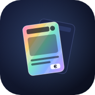

Mana Orbit
Politique de confidentialité
Dernière mise à jour : 8 octobre 2026
Mana Orbit est une application gratuite pour suivre sa collection de cartes Magic, ses decks et leurs prix. Elle collecte le moins de données possible et n'en vend aucune.
Responsable du traitement : le développeur de Mana Orbit (particulier, France). Contact : martin.stuis11@gmail.com.
Sans compte : tout reste sur ton appareil
Ta collection, tes decks et tes réglages sont enregistrés dans le stockage de ton navigateur ou de l'application, sur ton appareil. Nous n'y avons pas accès. Si tu saisis un token CardTrader, il est gardé au même endroit et n'est envoyé à notre serveur qu'avec tes recherches CardTrader (voir « Notre serveur »). Les données de l'appli Android sont exclues de la sauvegarde Android (Google).
Le scan de cartes utilise l'appareil photo uniquement quand tu l'ouvres. Les images sont analysées sur ton appareil et ne sont jamais envoyées. Dans l'appli Android, la lecture passe par Google ML Kit, sur le téléphone ; les services Google Play peuvent envoyer à Google des diagnostics anonymes, selon les conditions de ML Kit.
Avec un compte (facultatif)
Le compte sert à retrouver tes données sur tous tes appareils. Il repose sur Firebase Authentication et Cloud Firestore (Google). Sont enregistrés :
- ton adresse e-mail et ton mode de connexion (e-mail ou Google) ;
- avec Google, ton nom et ta photo de profil Google (gardés par Firebase Authentication ; la photo s'affiche sur ton bouton Compte) ;
- si tu en choisis, ton pseudo et ta photo de profil (une image réduite à 128 pixels) ;
- tes decks, ta collection, l'historique de sa valeur et ta liste d'échange.
Ces données sont gardées tant que le compte existe. Ton token CardTrader n'est jamais enregistré dans le compte.
Liens partagés
Quand tu partages ta liste d'échange ou un deck, son contenu est lisible par toute personne qui a le lien. Il ne contient ni ton e-mail ni l'identifiant de ton compte, seulement une empreinte (SHA-256) de cet identifiant, qui montre que le lien est à toi. Si tu as choisi un pseudo ou une photo de profil, ils y apparaissent aussi (« Liste d'échange de … ») ; ta photo Google, jamais. Tu peux retirer un lien à tout moment.
Notre serveur
Le serveur de Mana Orbit (hébergé par Hostinger) relaie les requêtes vers CardTrader, Scryfall et EDHREC et garde en cache des prix publics. Il lit aussi les liens que tu colles pour importer un deck (EDHREC, Archidekt, Moxfield…). Si tu les actives :
- notifications : l'adresse d'abonnement de ton navigateur ou, dans l'appli Android, le jeton Firebase Cloud Messaging ;
- alertes de prix : les cartes surveillées, tes seuils et le nom des decks concernés.
Elles sont supprimées quand tu les désactives ou supprimes ton compte. Le texte des notifications (noms de cartes et de decks) passe par le service d'envoi de Google ou de l'éditeur de ton navigateur.
Token CardTrader : il n'accompagne que tes recherches CardTrader (jamais les alertes ni l'import). Le serveur s'en sert pour interroger CardTrader avec ton compte et le garde en mémoire le temps de la recherche ; il n'en conserve qu'une empreinte (SHA-256) pour espacer les requêtes. Il ne l'écrit jamais sur disque ni dans ses journaux, ni dans ton compte.
Connecté, l'appli lui présente une preuve de connexion Firebase pour savoir si ton compte a des droits particuliers ; il la vérifie sans l'enregistrer. Pour limiter les abus, il compte en mémoire les requêtes par adresse IP. L'hébergeur peut tenir des journaux techniques (adresse IP, date, page demandée) pour la sécurité ; il les garde un temps limité, selon sa propre politique.
Services tiers
Ton appareil contacte directement : Scryfall (images et données des cartes, prix tendance), Google Fonts (polices), Google (SDK Firebase) et jsDelivr (moteur de reconnaissance du scan). Comme pour tout site web, ces services reçoivent ton adresse IP. Si tu saisis ton token CardTrader, tes recherches et ton panier passent par CardTrader avec ton propre compte.
Publicité et mesure d'audience
Appli Android : un petit bandeau publicitaire Google AdMob s'affiche en haut de l'écran pour financer l'hébergement. Il n'apparaît pas pour certains comptes, ni pendant le scan. Dans l'Union européenne et là où la loi l'exige, ton consentement est demandé avant la première annonce, avec le formulaire de Google ; tu peux changer d'avis à tout moment dans Réglages › Confidentialité › Choix publicitaires.
Pour choisir et compter ses annonces, AdMob (Google) peut utiliser l'identifiant publicitaire de ton appareil, ton adresse IP et des informations techniques sur l'appareil et l'appli. Selon ta réponse, les annonces sont personnalisées ou non. Tu peux réinitialiser ou supprimer l'identifiant publicitaire dans les paramètres d'Android (Google › Annonces). Détails : comment Google utilise les données des applis partenaires.
Version web (navigateur, ou appli installée depuis le site) : aucune publicité.
Mana Orbit ne mesure pas l'audience : aucun outil de statistiques.
Bases légales
- exécution du service : le compte, la synchronisation, les liens partagés et l'import ;
- consentement : la publicité (formulaire de Google) et les notifications, alertes de prix comprises ; tu peux le retirer à tout moment ;
- intérêt légitime : les journaux de sécurité, la limite de requêtes et le cache des prix.
Hors de l'Union européenne
Google (Firebase, AdMob, Firebase Cloud Messaging, ML Kit via les services Google Play) et Scryfall sont établis aux États-Unis : ce qu'ils reçoivent peut y être traité. Google indique encadrer ces transferts par le Data Privacy Framework UE–États-Unis et par des clauses contractuelles types. Scryfall, contacté comme n'importe quel site, ne reçoit que ton adresse IP et les cartes demandées.
Tes droits
Tu peux à tout moment accéder à tes données, les exporter, les corriger ou les supprimer (RGPD). Tu peux aussi adresser une réclamation à la CNIL (cnil.fr).
Supprimer ton compte : dans l'application, Compte › Supprimer mon compte, ou directement sur cette page. Tout ce que le compte a en ligne est effacé : decks, collection, historique, liste d'échange et liens partagés. Tes alertes de prix et notifications sont aussi arrêtées sur le serveur, et la copie du compte gardée sur l'appareil est effacée. Les données de ton appareil peuvent être effacées en même temps, ou à part depuis Réglages › Confidentialité.
Pour toute question ou pour exercer tes droits, écris à martin.stuis11@gmail.com.
Contenu de fan
Mana Orbit est un contenu de fan non officiel autorisé par la Fan Content Policy. Il n'est ni approuvé ni soutenu par Wizards of the Coast. Certains éléments utilisés sont la propriété de Wizards of the Coast. ©Wizards of the Coast LLC.
Privacy policy
Last updated: October 8, 2026
Mana Orbit is a free app to track your Magic card collection, your decks and their prices. It collects as little data as possible and never sells any.
Data controller: the developer of Mana Orbit (private individual, France). Contact: martin.stuis11@gmail.com.
Without an account: everything stays on your device
Your collection, decks and settings are stored in your browser's or the app's storage, on your device. We cannot access them. If you enter a CardTrader token, it is kept in the same place and only sent to our server with your CardTrader searches (see "Our server"). The Android app's data is excluded from Android (Google) backup.
Card scanning uses the camera only while you have it open. Images are analysed on your device and are never uploaded. In the Android app, recognition uses Google ML Kit, on the phone; Google Play services may send Google anonymous diagnostics, under the ML Kit terms.
With an account (optional)
An account lets you get your data back on all your devices. It relies on Firebase Authentication and Cloud Firestore (Google). We store:
- your email address and sign-in method (email or Google);
- with Google, your Google name and profile photo (kept by Firebase Authentication; the photo is shown on your Account button);
- if you set them, your nickname and profile photo (an image scaled down to 128 pixels);
- your decks, your collection, its value history and your trade list.
This data is kept as long as the account exists. Your CardTrader token is never stored in the account.
Shared links
When you share your trade list or a deck, its content can be read by anyone who has the link. It contains neither your email nor your account ID, only a fingerprint (SHA-256) of that ID, which shows the link is yours. If you set a nickname or a profile photo, they appear there too (“…'s trade list”); your Google photo never does. You can remove a link at any time.
Our server
The Mana Orbit server (hosted by Hostinger) relays requests to CardTrader, Scryfall and EDHREC and caches public prices. It also fetches the links you paste to import a deck (EDHREC, Archidekt, Moxfield…). If you turn them on:
- notifications: your browser's subscription address or, in the Android app, the Firebase Cloud Messaging token;
- price alerts: the watched cards, your thresholds and the names of the decks concerned.
They are deleted when you turn them off or delete your account. Notification text (card and deck names) goes through Google's or your browser vendor's push service.
CardTrader token: it only goes with your CardTrader searches (never with alerts or imports). The server uses it to query CardTrader with your account and keeps it in memory for the duration of the search; it only keeps a fingerprint (SHA-256) of it to pace requests. It never writes it to disk or to its logs, nor to your account.
When you are signed in, the app shows it a Firebase sign-in proof to check whether your account has special rights; the server verifies it without storing it. To limit abuse, it counts requests per IP address in memory. The host may keep technical logs (IP address, date, requested page) for security; it keeps them for a limited time, under its own policy.
Third-party services
Your device contacts directly: Scryfall (card images and data, trend prices), Google Fonts (fonts), Google (Firebase SDK) and jsDelivr (scan recognition engine). As with any website, these services receive your IP address. If you enter your CardTrader token, your searches and cart go through CardTrader with your own account.
Advertising and analytics
Android app: a small Google AdMob ad banner is shown at the top of the screen to pay for hosting. It does not appear for some accounts, nor while scanning. In the European Union and wherever the law requires it, your consent is asked before the first ad, with Google's consent form; you can change your mind at any time in Settings › Privacy › Ad choices.
To select and count its ads, AdMob (Google) may use your device's advertising ID, your IP address and technical information about the device and the app. Depending on your answer, ads are personalised or not. You can reset or delete the advertising ID in Android settings (Google › Ads). Details: how Google uses information from partner apps.
Web version (browser, or app installed from the website): no ads.
Mana Orbit runs no analytics.
Legal bases
- performance of the service: the account, sync, shared links and imports;
- consent: ads (Google's form) and notifications, price alerts included; you can withdraw it at any time;
- legitimate interest: security logs, request limits and the price cache.
Outside the European Union
Google (Firebase, AdMob, Firebase Cloud Messaging, ML Kit via Google Play services) and Scryfall are based in the United States: what they receive may be processed there. Google states that it covers these transfers with the EU-US Data Privacy Framework and standard contractual clauses. Scryfall, reached like any website, only receives your IP address and the cards requested.
Your rights
You can access, export, correct or delete your data at any time (GDPR). You can also lodge a complaint with your data protection authority.
Delete your account: in the app, Account › Delete my account, or directly from this page. Everything the account holds online is erased: decks, collection, history, trade list and shared links. Your price alerts and notifications are also stopped on the server, and the copy of the account kept on the device is erased. Data on your device can be erased at the same time, or separately from Settings › Privacy.
For any question or to exercise your rights, write to martin.stuis11@gmail.com.
Fan content
Mana Orbit is unofficial Fan Content permitted under the Fan Content Policy. Not approved/endorsed by Wizards. Portions of the materials used are property of Wizards of the Coast. ©Wizards of the Coast LLC.